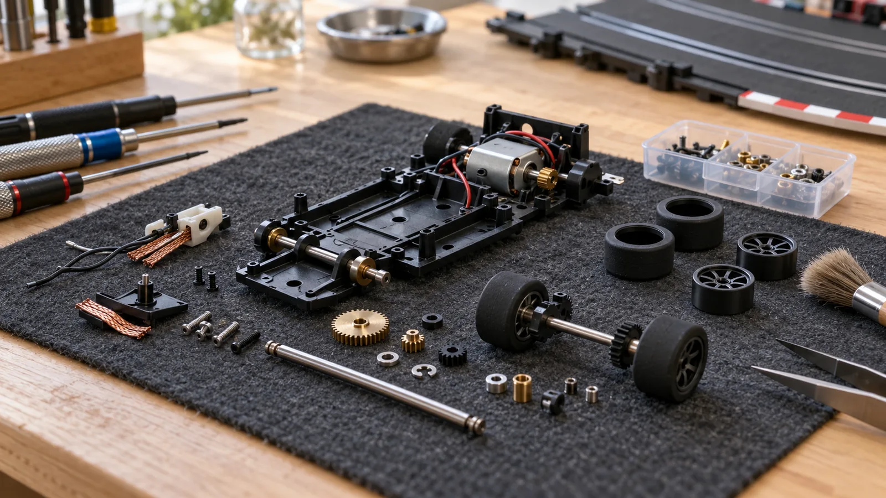
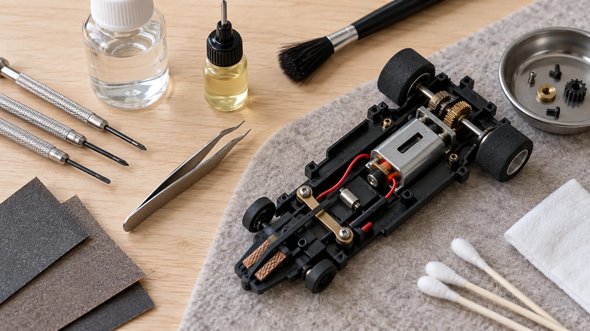
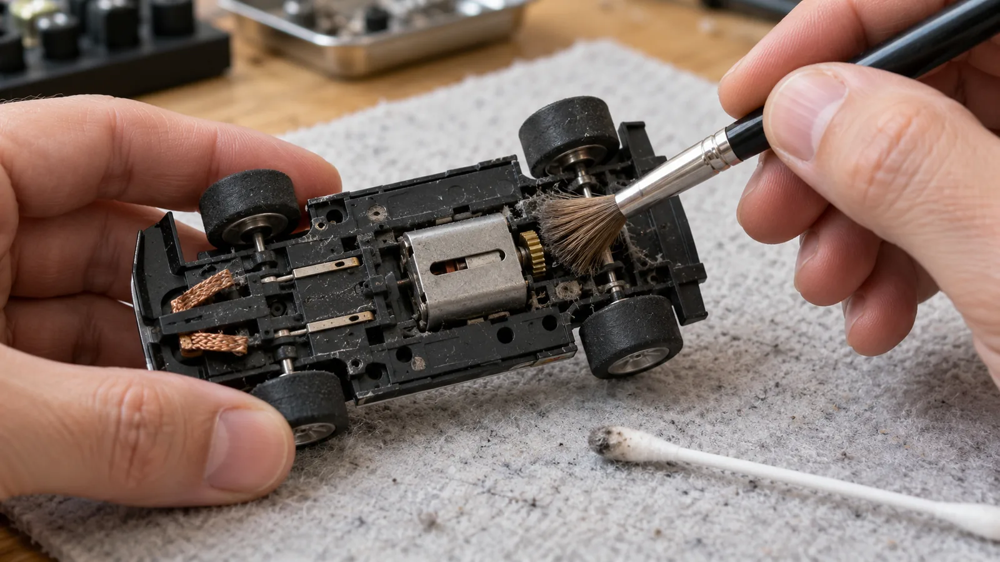
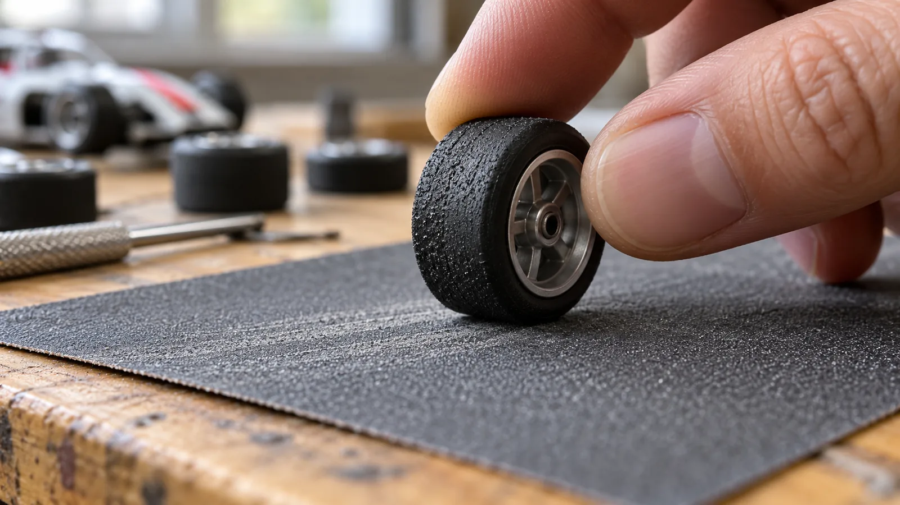
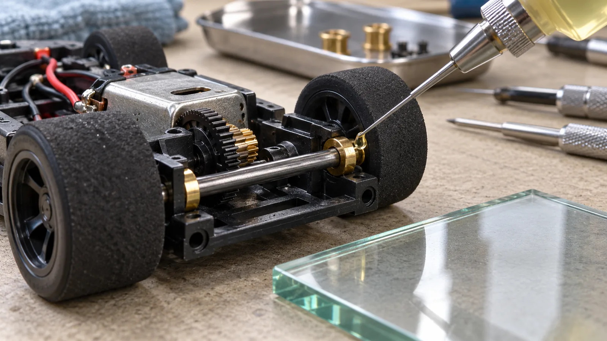
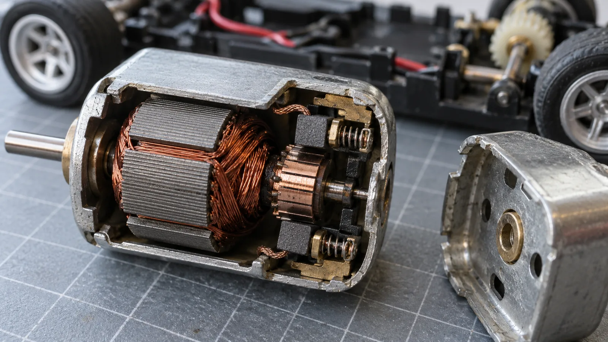
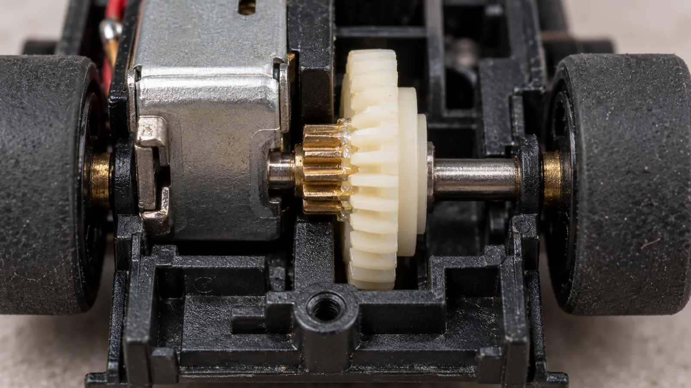
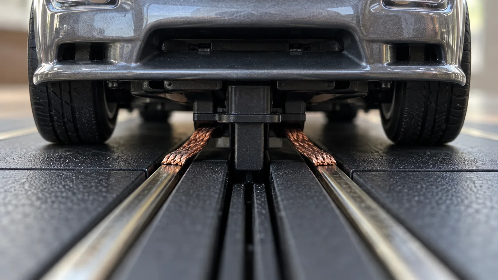

Manutenção de carros de autorama não significa trocar peças para buscar velocidade a qualquer custo. O primeiro passo é recuperar um funcionamento regular: o carro deve rolar sem prender, receber energia pelos contatos e manter os pneus limpos. Neste roteiro, você vai começar pelo que é simples e avançar para os componentes internos somente quando o projeto do modelo permitir.
Prepare a bancada antes de mexer
Use mesa clara, boa luz e bandeja para parafusos. Separe chaves de relojoeiro do tamanho correto, pinça, cotonetes e pincel macio. Fotografe o carro antes de retirar fios ou transmissão; a imagem ajuda na remontagem.
Álcool isopropílico, óleo fino de modelismo e lixa de grão 600 a 1000 não servem para todo modelo. Confira a compatibilidade no manual e mantenha líquidos longe do motor e da eletrônica.

Manutenção de carros de autorama: limpeza que mais rende
Desligue a pista e vire o carro sobre um pano. Retire cabelos dos eixos com os dedos ou pinça. Passe pincel macio pelo chassi sem empurrar sujeira para o motor; use cotonete seco nos cantos. Esse é um bom começo para quem quer saber como limpar carro de autorama.
Para resíduos nos contatos, álcool isopropílico só se o fabricante permitir: umedeça o cotonete, sem despejar líquido no carro. Acetona e thinner podem danificar plástico e acabamento. Limpe os trilhos com pano adequado e espere secar. Veja o guia de montagem e preparação da pista.

Pneus: aderência vem da borracha limpa
Poeira nos pneus traseiros reduz o contato com a pista. Comece com fita de baixa aderência ou pano levemente úmido, se permitido, e seque bem. O guia de manutenção da Scalextric também recomenda a limpeza dos pneus para os carros dessa marca; não aplique solventes ou produtos domésticos sem confirmação de compatibilidade no seu modelo.
Gire a roda à mão e observe se oscila ou raspa no chassi. Isso pode indicar pneu mal assentado, roda empenada ou eixo torto. Uma folga lateral pequena pode ser prevista pelo projeto; não tente endireitar o conjunto com alicate.
Alguns pneus de competição permitem lixamento fino para uniformizar a banda. Só faça isso se o fabricante e a categoria autorizarem, removendo pouco material com apoio plano. Não use o motor do carro para girar o pneu contra a lixa.

Eixos e buchas: onde a velocidade se perde
Com a pista desligada, gire as rodas traseiras à mão. Remova fios e sujeira; se o eixo sair sem esforço e o manual permitir, role-o sobre vidro para observar se está empenado. Não force componentes ainda montados no chassi.
Alguns modelos pedem óleo fino nas buchas; outros já vêm lubrificados. Para lubrificar um carro de autorama, siga o manual e aplique uma gota mínima no apoio indicado. Retire o excesso: óleo em pneus, tranças, guia ou trilhos prejudica aderência e contato.

Motor: escovas, comutador e sinais de alerta
Nem todo motor pode ser aberto. Em motores escovados reparáveis, as escovas tocam o comutador de cobre para conduzir corrente. Já muitos carros recreativos usam motores fechados, sem escovas substituíveis pelo usuário; abrir o conjunto pode danificá-lo ou afetar a garantia.
Se o manual autorizar a inspeção, observe sem raspar: escovas muito curtas, molas deformadas, fios soltos ou comutador marcado pedem avaliação. Pare se houver cheiro de queimado, aquecimento incomum, faísca intensa ou perda repentina de força. Não lixe o comutador nem coloque óleo dentro do motor sem orientação específica.
Use escovas de reposição somente quando o fabricante prevê a troca e descreve o procedimento. A decisão de trocar escovas do motor de autorama depende desse projeto; se for selado, procure assistência ou substituição compatível.

Engrenagens: encaixe preciso, sem aperto
Quando o carro usa essa configuração, o pinhão do motor movimenta a coroa no eixo. Gire as rodas à mão e procure dentes quebrados, ruído áspero ou pontos presos. Retire poeira com pincel, sem encharcar a transmissão.
Para ajustar as engrenagens do autorama, preserve o giro livre e confira a folga prevista pelo fabricante. Substitua dentes danificados por componentes compatíveis. Confirme se pinhão e coroa devem ser trocados em conjunto e use graxa adequada, em quantidade mínima.

Guia e tranças: contato com a pista
A guia mantém o carro na canaleta; as tranças encostam nos trilhos e conduzem energia. Confira se a guia está íntegra e se as tranças não estão torcidas, esmagadas ou cruzadas. Use escova pequena e seca para tirar poeira, sem raspar o metal.
Trança desfiada ou mal presa pode exigir reposição própria. O encaixe da guia varia entre modelos; não puxe pelos fios do motor. Ao recolocar o carro, verifique se a guia e os contatos assentaram corretamente.

Ajuste fino: peso e equilíbrio
Depois da limpeza, teste com a mesma pista e controle. Mude uma variável por vez e anote o resultado. Para melhorar o desempenho no autorama, comece por pneus, contatos e eixos antes de acrescentar peso. Lastro pode sobrecarregar o motor; só o use se o chassi e as regras permitirem, longe das partes móveis.
Procure voltas estáveis, não apenas velocidade máxima.
Uma rotina que cabe na vida real
Os intervalos abaixo são referências, não regras universais: uso, poeira e construção do carro mudam a frequência. Siga o manual se ele indicar outro prazo.
| Quando | O que conferir |
|---|---|
| Após cada sessão | Retire fios dos eixos, observe pneus e tranças e guarde em caixa limpa. |
| A cada 5 a 10 horas | Limpe o chassi e confira rodas, guia e ruídos. |
| A cada 30 a 40 horas | Inspecione folgas, transmissão e peças reparáveis previstas no manual. |
| A cada trimestre | Revise a condição geral; antecipe se o carro rodar muito. |
Guarde o modelo seco, longe de sol, calor e poeira. Ao retirar a carroceria, organize os parafusos e não estique os fios.
Erros comuns de quem está começando
- Lubrificar demais e contaminar pneus ou contatos.
- Usar solvente forte em plástico e pintura.
- Trocar várias peças de uma vez, sem descobrir a causa.
- Forçar eixo, guia ou chassi.
- Abrir motor selado sem instrução.
- Lixar pneu recreativo antes de tentar limpá-lo.
Se a falha continuar, compare com outro carro na mesma pista para separar problema no modelo de defeito no circuito. Veja também a seção de manutenção de autorama.
Perguntas frequentes
Com que frequência devo lubrificar o carro?
Não existe intervalo único. Siga o manual e aplique apenas nos pontos indicados; muitos carros recreativos não precisam de óleo a cada sessão.
Posso usar álcool isopropílico em qualquer peça?
Não. Ele pode afetar plástico, pintura, adesivos ou pneus. Use somente onde o fabricante permitir e aplique no cotonete.
Lixar o pneu melhora o desempenho?
Em alguns pneus, pode uniformizar a banda, mas também danificar a borracha. Comece pela limpeza e lixe só se o modelo permitir.
Quando devo trocar as escovas do motor?
Só quando o motor tiver escovas substituíveis e o manual descrever a troca. Muitos motores recreativos são selados.
Para fechar
Comece pela limpeza e pelas verificações externas. Se o sintoma persistir, consulte o manual ou uma assistência familiarizada com o modelo antes de desmontar componentes; muitos conjuntos não foram projetados para reparo doméstico.
Referência técnica
Os procedimentos variam entre sistemas e fabricantes. Consulte a documentação do seu modelo antes de aplicar produtos ou desmontar componentes.